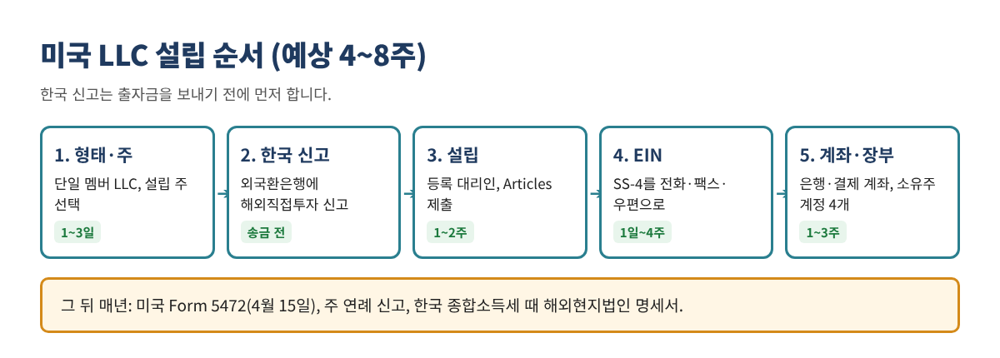
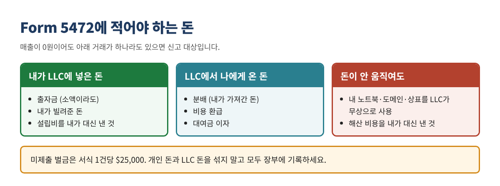
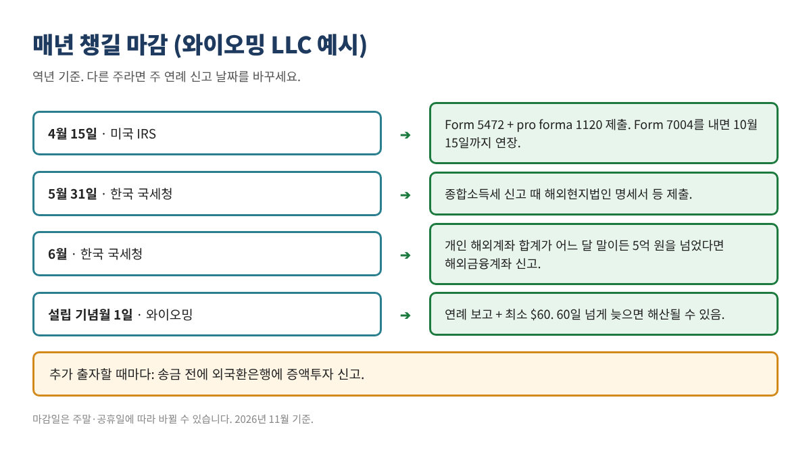

한국인 비거주자를 위한 미국 LLC 설립 가이드: 설립보다 중요한 두 가지 신고
한국에 사는 사람도 미국에 가지 않고 LLC를 세울 수 있습니다. 하지만 실제 위험은 설립이 아니라 그 뒤에 있습니다. 미국의 Form 5472 미제출 벌금과 한국의 해외직접투자 미신고 과태료, 이 두 가지가 비거주자가 가장 많이 놓치는 부분입니다.
이런 분께 필요합니다: SSN이나 영주권 없이 미국 LLC를 세우려는 한국 거주자. 온라인 셀러, 프리랜서, SaaS, 컨설팅처럼 미국 고객을 상대하는 1인 사업자.

1. LLC가 나에게 맞는가
미국 고객에게 팔고 Stripe·Amazon 같은 미국 결제 수단이 필요한 1인 사업자라면 단일 멤버 LLC가 보통 출발점입니다. 반대로 "세금을 줄이려고" 만드는 것이라면 다시 생각하세요. 한국 거주자는 전 세계 소득에 대해 한국에서 과세됩니다.
| 구분 | 단일 멤버 LLC | 다중 멤버 LLC | C-Corp |
|---|---|---|---|
| 미국 세법상 분류 | 무시단체(disregarded entity) | 파트너십 | 법인 |
| 매년 연방 서류 | Form 5472 + pro forma 1120 | Form 1065 + K-1 (+ 원천징수 서류) | Form 1120 (+ 5472) |
| 적합한 경우 | 1인 온라인 사업, 프리랜서 | 동업자가 있는 경우 | 투자 유치 계획 |
| 복잡도 | 낮음 | 높음 | 중간~높음 |
- 미국에서 일하지 않고 미국 내 사업장이 없는 비거주자 1인 LLC는 미국 연방 소득세를 내지 않는 경우가 많습니다. 다만 사업 형태에 따라 달라지므로 세무사에게 확인하세요.
- S-Corp은 비거주 외국인이 주주가 될 수 없습니다. 미국 블로그의 S-Corp 절세법은 해당되지 않습니다.
- LLC가 비자를 주지는 않습니다. 미국에서 직접 일하려면 별도 비자가 필요합니다.
2. 어느 주에 설립할까
미국에 사무실이 없는 비거주자 1인 LLC라면 비용과 관리 부담이 균형 잡힌 와이오밍이 무난한 기본값입니다. 델라웨어는 투자 유치나 법원 예측성이 중요할 때 고려하세요. 실제 사업장이나 직원이 있는 주가 있다면 그 주에 등록해야 할 수 있습니다.
| 주 | 설립 수수료 | 매년 주 비용(최소) | 마감 | 특징 |
|---|---|---|---|---|
| 와이오밍 | $100 | $60 | 설립월 첫날 | 주 소득세 없음. 60일 넘게 늦으면 해산될 수 있음 |
| 뉴멕시코 | $50 | $0 (연례 보고 없음) | 없음 | 가장 저렴. 은행 친숙도는 낮은 편 |
| 델라웨어 | $110 | $400 (2026 과세연도부터, 이전 $300) | 6월 1일 | 투자자·법원 친숙도 높음. 가장 비쌈 |
| 네바다 | $425 | $350 | 설립월 말일 | 주 소득세 없음. 늦으면 $75 가산 |
등록 대리인 비용(보통 연 $100~300)은 별도입니다. 델라웨어 연간세는 $400과 $300 안내가 섞여 있으니 납부 전 주정부 사이트에서 확인하세요. 단일 멤버 LLC의 연방 의무(Form 5472)는 어느 주든 같습니다.
3. 등록 대리인과 설립 서류
비거주자는 설립 주에 실제 주소가 있는 등록 대리인(Registered Agent)을 반드시 선임해야 합니다. 법원 서류와 주정부 통지를 대신 받아 주는 역할입니다.
- 회사 이름 확인: 주 국무장관실(Secretary of State) 사이트에서 중복 검색. 이름 끝에 "LLC".
- 등록 대리인 계약: 우편 스캔과 연례 신고 알림이 포함되는지 확인.
- 사업 주소: 은행과 결제사는 사서함(PO Box)을 거절하는 경우가 많습니다.
- 설립 서류 제출: Articles of Organization(주에 따라 Certificate of Formation)을 온라인 제출. SSN은 필요 없습니다.
- 운영계약서(Operating Agreement): 주에 내지 않아도 은행이 요구하는 경우가 많습니다. 1인 LLC도 만들어 두세요.
BOI 보고는 필요 없습니다. FinCEN은 2026년 8월 최종 규칙으로 미국에서 설립된 법인을 BOI 보고에서 영구 면제했습니다. 한국인이 세운 와이오밍 LLC도 미국 법인이므로 면제입니다. BOI 대행비를 받는 업체는 피하세요.
4. SSN 없이 EIN 받기
SSN이나 ITIN이 없어도 EIN은 무료로 받을 수 있습니다. 다만 IRS 온라인 신청은 쓸 수 없고 Form SS-4를 전화·팩스·우편 중 하나로 내야 합니다.
| 방법 | 연락처 | 소요 시간 | 비고 |
|---|---|---|---|
| 전화 | +1-267-941-1099 (유료), 미 동부 월~금 6시~23시 | 통화 중 발급 | 한국 시간 밤 8시~다음날 오후 1시 (서머타임 때 1시간 빠름) |
| 팩스 | +1-304-707-9471 (미국 밖) | 보통 영업일 4일 | 회신용 팩스 번호 필요 (인터넷 팩스 가능) |
| 우편 | IRS 신시내티 국제처리 부서 | 약 4주 이상 | 최후의 수단 |
- 2025년 12월 개정판 SS-4 양식을 쓰세요.
- 7b란(책임자 SSN/ITIN): "Foreign"이라고 적습니다.
- 법인명: 주정부에 등록된 이름과 한 글자도 다르지 않게.
- 법인 유형: 단일 멤버 LLC는 "Other"에 "Foreign-owned U.S. disregarded entity"라고 적는 것이 일반적입니다. 세무사와 한 번 더 확인하세요.
- 하루에 책임자 1인당 EIN 1개만 발급됩니다.
- 우편으로 오는 CP 575를 보관하세요. 잃어버렸다면 전화로 147C 확인서를 다시 받을 수 있습니다.
주의: EIN은 IRS에서 무료입니다. "IRS 신청비"를 받는 사이트는 피하세요.
5. 미국 은행·결제 계좌
비거주자에게 가장 현실적인 길은 원격 개설이 가능한 핀테크 비즈니스 계좌입니다. 전통 은행은 대부분 방문을 요구합니다. 비거주자 수용 여부는 업체마다 자주 바뀌니 신청 전에 자격 요건을 확인하세요.
- ☐ 설립 서류 (주정부 승인본)
- ☐ EIN 확인서 (CP 575 또는 147C)
- ☐ 운영계약서
- ☐ 여권
- ☐ 한국 주소 증빙 (영문 은행 거래내역 등)
- ☐ 사업 설명과 웹사이트
사업 내용은 누구에게, 무엇을, 어떻게 판매하는지 구체적으로 설명하세요. 모호하면 거절 사유가 됩니다. 미국 LLC와 EIN이 있으면 Stripe 같은 미국 결제 대행사에 가입할 수 있고, 이것이 많은 한국 사업자가 LLC를 세우는 실제 이유입니다.
6. 미국 의무: 매년 Form 5472
외국인이 소유한 단일 멤버 LLC는 매년 4월 15일까지 Form 5472를 pro forma Form 1120에 첨부해 제출해야 합니다. 매출이 0원이어도 마찬가지입니다. 누락하면 서식 1건당 $25,000 벌금이 붙습니다.
| 항목 | 내용 |
|---|---|
| 대상 | 외국인 소유 단일 멤버 LLC (2017년 과세연도부터) |
| 마감 | 다음 해 4월 15일. Form 7004를 기한 내 내면 10월 15일까지 연장 |
| 제출 방법 | 전자신고 불가. IRS 전용 부서에 팩스 또는 우편 (당해 안내문에서 주소 확인) |
| pro forma 1120 | 법인명, 주소, EIN만 적고 "Form 5472 제출용"으로 표시 |
| 벌금 | 건당 $25,000. IRS 통지 후에도 방치하면 추가 벌금 |
| 기록 보관 | 장부, 송금 내역, 계약서 |

그래서 개인 돈과 LLC 돈을 섞지 말고, 오가는 모든 돈을 장부에 기록하는 것이 가장 좋은 예방책입니다. 미국 회사가 돈을 줄 때는 W-8BEN을 요구하는데, 한미 조세조약으로 원천징수율을 낮출 수 있는 경우가 있습니다. 미국에 직원·창고·사무실이 생기면 연방 소득세나 주 판매세 의무가 생길 수 있으니 미국 세무사와 상담하세요.
7. 한국 의무: 송금 전에 해외직접투자 신고
미국 서류보다 더 자주 놓치는 것이 한국 신고입니다. 한국 거주자가 외국 법인을 세우면 1달러만 투자해도 송금 전에 외국환은행에 해외직접투자 신고를 해야 합니다. 금감원 안내에 따르면 외환 위반 1,072건 중 해외직접투자가 44.6%로 가장 많았습니다.
| 시점 | 할 일 | 어디에 |
|---|---|---|
| 송금 전 | 해외직접투자 신고 (지분 10% 이상. 1인 LLC는 100%) | 주거래 외국환은행 1곳 |
| 송금 후 | 송금보고, 지분 취득보고 | 같은 은행 |
| 추가 출자 때 | 증액투자 신고 | 같은 은행 |
| 매년 5월 | 종합소득세 신고 때 해외현지법인 명세서 등 | 국세청 |
| 매년 | 누적 투자 300만 달러 초과 시 연간사업실적보고서 | 같은 은행 |
| 매년 6월 | 해외계좌 합계가 월말 5억 원을 넘은 적 있으면 해외금융계좌 신고 | 국세청 |
| 청산 때 | 청산보고 | 같은 은행 |
신고를 놓쳤다면: 신고 없는 자본거래는 외국환거래법상 과태료 대상입니다. 알게 된 즉시 은행에 사후 신고하는 것이 처분을 줄이는 방법입니다.
- 한국 거주자는 전 세계 소득에 대해 한국에서 과세됩니다. LLC를 만든다고 한국 신고가 없어지지 않습니다.
- 미국에서 무시단체인 LLC를 한국 세법은 외국법인으로 보는 경우가 많습니다. 이 경우 LLC에서 가져오는 돈이 배당소득으로 다뤄질 수 있고, 이익을 쌓아 두면 특정외국법인 유보소득 규정을 검토해야 할 수 있습니다.
- 미국에서 세금을 냈다면 외국납부세액공제로 이중과세를 일부 조정할 수 있습니다.
- 설립 전에 국제조세에 익숙한 세무사와 한국 신고 방식을 정하세요.
8. 장부 세팅과 연간 마감
Form 5472와 한국 신고는 모두 내가 LLC와 주고받은 돈의 기록에서 출발합니다. 그래서 장부는 첫 송금 전에 세팅하는 것이 가장 쉽습니다. QuickBooks Online이라면 LLC 은행·결제 계좌를 연결하고 아래 4개 계정을 미리 만드세요. 이 계정에 쌓인 금액이 곧 Form 5472의 보고 금액입니다.
| 계정 | 종류 | 의미 |
|---|---|---|
| Owner Contributions | 자본 | 내가 넣은 돈 |
| Owner Distributions | 자본 | 내가 가져간 돈 |
| Loan from Owner | 부채 | 내가 빌려준 돈 |
| Expenses Paid by Owner | 비용 | 내가 대신 낸 비용 (설립비 포함) |

자주 하는 실수
- 매출이 없으니 Form 5472는 안 내도 된다고 생각함: 출자금만 넣어도 신고 대상입니다.
- 해외직접투자 신고 없이 출자금을 보냄: 송금 전에 은행에서 신고해야 합니다.
- LLC 돈을 개인 용도로 씀: 기록이 꼬이고 유한책임 보호도 약해집니다.
- 없어진 BOI 보고에 대행비를 냄: 미국 설립 LLC는 면제입니다.
- 연례 신고를 놓쳐 해산됨: 와이오밍은 60일을 넘기면 행정 해산될 수 있습니다.
- S-Corp 선택을 시도함: 비거주 외국인은 S-Corp 주주가 될 수 없습니다.
체크리스트
- ☐ 법인 형태 결정 (단일 멤버 LLC / 다중 멤버 / C-Corp)
- ☐ 설립 주 결정
- ☐ 한국 세무사와 한국 신고 방식 확정
- ☐ 등록 대리인 계약, Articles 제출, 승인본 저장
- ☐ 운영계약서 작성
- ☐ EIN 발급 (SS-4), CP 575 보관
- ☐ 외국환은행에 해외직접투자 신고 (송금 전)
- ☐ 미국 비즈니스 계좌 개설, 출자금 송금, 송금·지분취득 보고
- ☐ 장부 세팅 (소유주 계정 4개)
- ☐ 연간 마감일을 캘린더에 등록
이 글은 교육용 자료이며 법률·세무 자문이 아닙니다. 수수료와 규정은 자주 바뀌므로 실행 전에 공식 사이트에서 다시 확인하세요. 한국 세금 처리는 국제조세에 익숙한 세무사와 확인하세요. QuickBooks는 Intuit Inc.의 등록 상표이며, 이 글은 Intuit과 제휴·보증 관계가 없습니다.
출처(2026년 11월 확인): IRS, Instructions for Form SS-4 (Rev. 12-2025): https://www.irs.gov/instructions/iss4 · IRS, How to Apply for an EIN: https://irs.gov/node/17164 · SDO CPA, Form 5472 Guide: https://www.sdocpa.com/form-5472-foreign-owned-business-guide/ · Ballard Spahr, FinCEN BOI 영구 면제: https://www.ballardspahr.com/insights/alerts-and-articles/2026/08/fincen-permanently-exempts-us-entities-and-persons-from-beneficial-ownership-reporting · Zenind, Wyoming LLC Fees 2026: https://www.zenind.com/en-US/help/post/wyoming-llc-fees-licenses-and-filing-requirements-2026-guide · LLC University, 주별 연간 비용: https://www.llcuniversity.com/llc-annual-fees-by-state/ · 이투데이, 해외직접투자 신고 안내: https://www.etoday.co.kr/news/view/1619152 · 아시아경제, 외환 위반 1,072건: https://view.asiae.co.kr/article/2026071414351120844 · 법무법인 세종: https://shinkim.com/kor/media/newsletter/pdf/2998 · 국세청, 해외현지법인 자료 제출대상: https://www.nts.go.kr/nts/na/ntt/selectNttInfo.do?nttSn=52246